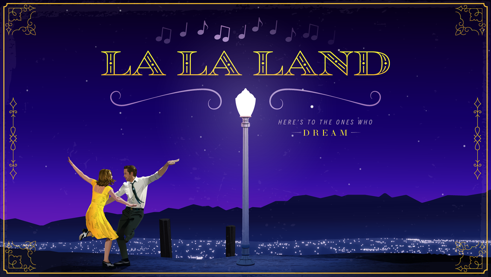
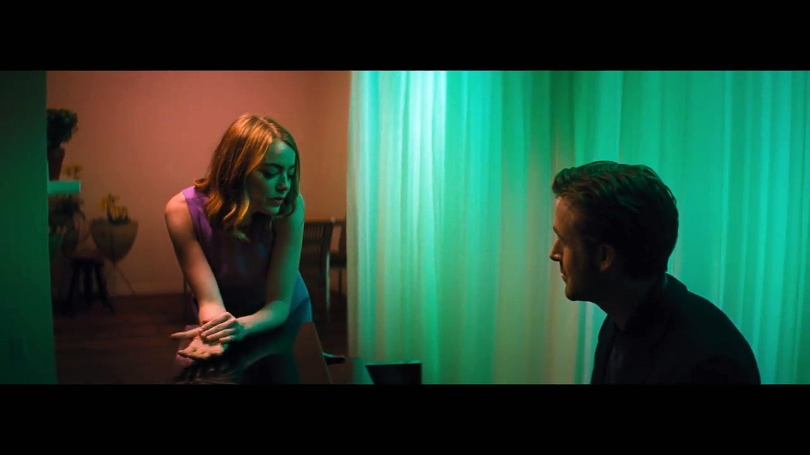

About the Movie
La La Land, directed by Damien Chazelle, is a romantic musical that tells the story of Mia (Emma Stone), an aspiring actress, and Sebastian (Ryan Gosling), a passionate jazz musician. Set in modern-day Los Angeles, the film explores the delicate balance between love, ambition, and the pursuit of one's dreams. The film is a love letter to Los Angeles, showcasing its beauty, vibrancy, and the dreams that people come to the city to chase.
The plot follows Mia and Sebastian as they meet, fall in love, and try to pursue their respective careers in a city where dreams are often out of reach. Mia, a barista and aspiring actress, faces countless rejections, while Sebastian, a jazz musician, is constantly struggling to find his place in a world that doesn't seem to appreciate his art. Their love story is not just about romance but about the personal sacrifices they make in the name of their passions. The movie blends the fantasy of musicals with the harsh realities of life, creating a poignant and heartfelt narrative.
The film’s cinematography and use of color are a key part of its storytelling. From the opening number on the highway to the final scene, the visuals are stunning. The use of vibrant colors and sweeping camera movements helps elevate the emotional stakes of the story, while also paying homage to classic Hollywood musicals. It’s a film that not only entertains but also makes you reflect on your own dreams and aspirations.
What I Loved

- The breathtaking cinematography and vibrant color palette that bring the story to life. Every frame feels like a work of art, with rich, saturated colors that evoke emotions. The opening scene on the freeway, where commuters burst into a spontaneous song and dance number, is a perfect example of how the film uses color and movement to create a sense of joy and possibility.
- Emma Stone and Ryan Gosling’s incredible performances. Their chemistry is undeniable, and they both bring their characters to life in a way that makes you care deeply about their journey. Emma Stone’s portrayal of Mia is both vulnerable and resilient, capturing the struggles and hopes of an aspiring artist. Ryan Gosling’s Sebastian is equally compelling, showing his deep love for jazz and his internal conflict between his dreams and his relationship.
- The unforgettable soundtrack. Music is at the heart of this film, and the songs do much more than provide a catchy tune. The iconic “City of Stars” perfectly captures the feeling of longing and hope, while “Audition (The Fools Who Dream)” is an emotional ballad that speaks to the sacrifices and dreams of artists everywhere. The music helps tell the story just as much as the dialogue, making it an integral part of the film’s narrative.
- The bittersweet ending. The film’s conclusion is unexpected, and it’s one that stays with you long after the credits roll. It’s a reminder that life doesn’t always turn out the way we expect, and sometimes the things we give up for our dreams are more than we realize. The final scene, which shows what could have been, is both heart-wrenching and beautiful, offering a poignant reflection on the choices we make in life.
- The film’s exploration of sacrifice and personal growth. As much as *La La Land* is about love, it’s also about personal ambition. Both Mia and Sebastian face difficult choices between their careers and their relationship. The movie doesn’t shy away from showing how pursuing one’s dreams can sometimes mean letting go of the people you love. It’s a powerful message about the cost of success and the emotional toll it can take on people.
My Takeaway
La La Land is a deeply emotional and thought-provoking film. It’s not just a love story, but a celebration of passion, creativity, and the pursuit of dreams. The movie speaks to anyone who has ever chased a dream, faced obstacles, or had to make difficult choices. It shows that while we may not always get everything we want, the journey itself is what shapes us and makes life meaningful.
The film’s central message is about following your passion, no matter the cost. Mia and Sebastian’s relationship is tested time and time again, but they both realize that they cannot abandon their dreams, even if it means parting ways. This message resonated deeply with me, reminding me of the importance of staying true to what I love, even when faced with setbacks or difficult choices. The movie encourages us to embrace the challenges and sacrifices that come with pursuing our dreams, and to cherish the moments of beauty along the way.
The film also made me reflect on the idea of "what could have been." The final sequence, where we see a flash-forward of Mia and Sebastian’s lives, shows us a version of their story where their dreams and their love intersect. It’s a powerful reminder that life is full of choices, and each choice shapes the path we take. While the ending is bittersweet, it’s also a celebration of how far Mia and Sebastian have come, both personally and professionally. Their journey is a testament to the resilience of the human spirit and the importance of following your heart.
La La Land is a film that touches the heart and challenges the mind. It’s a cinematic experience that combines music, romance, and drama in a way that feels both timeless and modern. It’s a movie that I will continue to think about for a long time, and one that has inspired me to continue chasing my own dreams, no matter where they may lead.